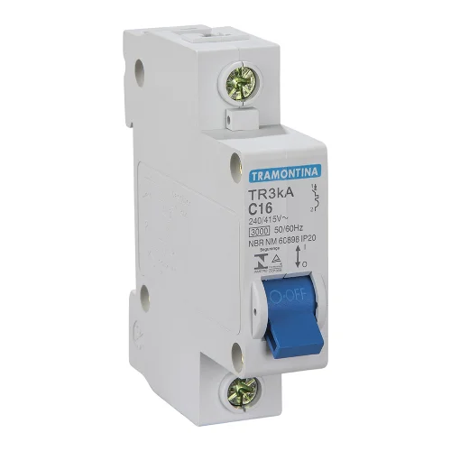
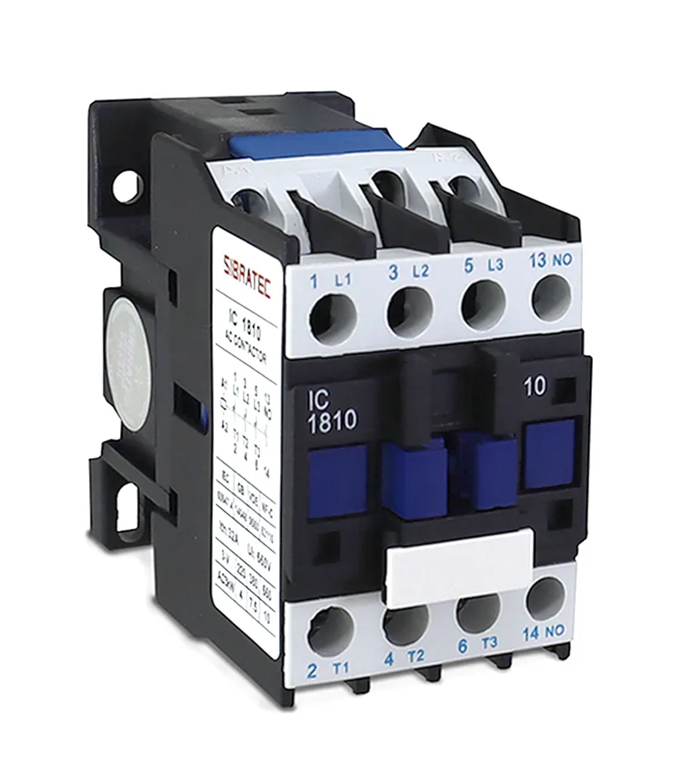
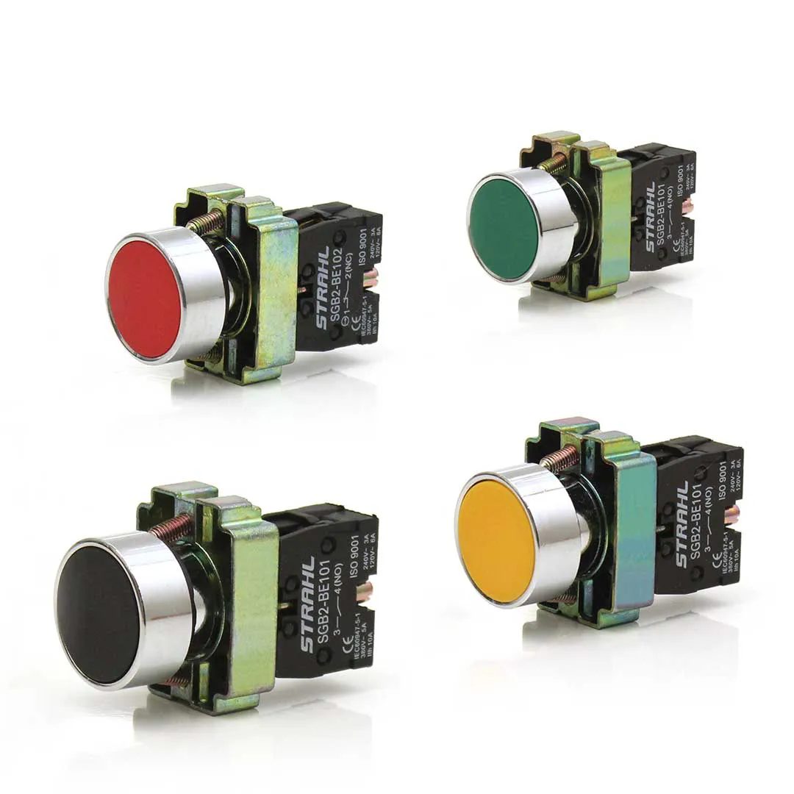
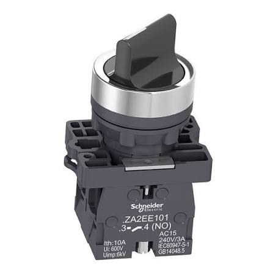
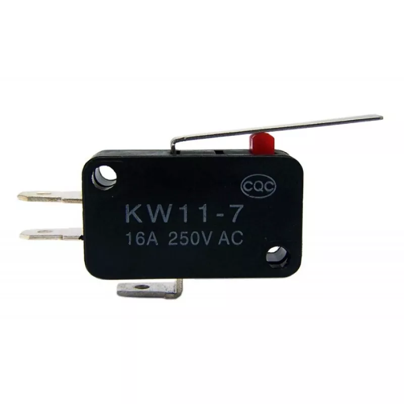
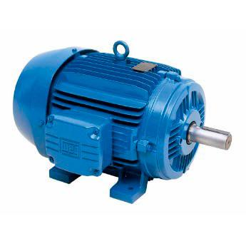
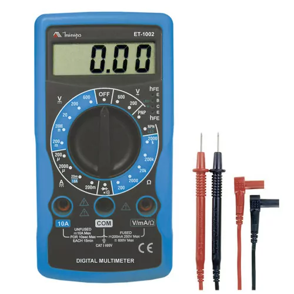
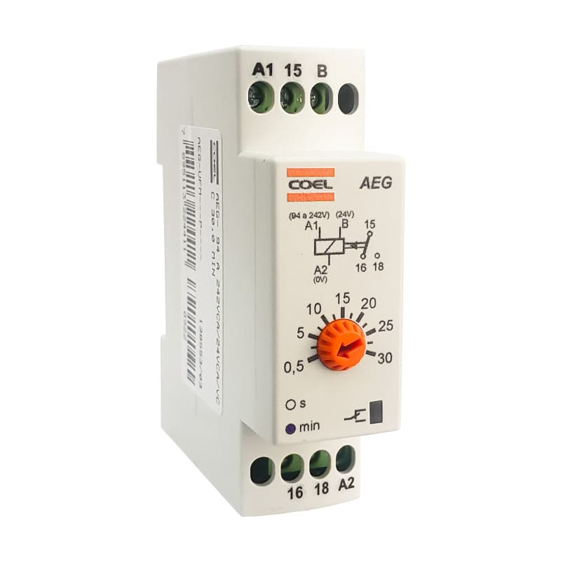
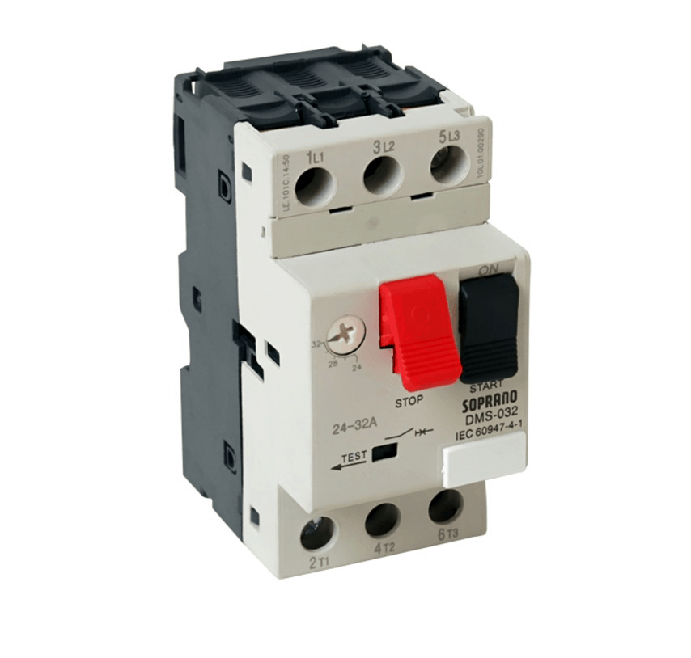
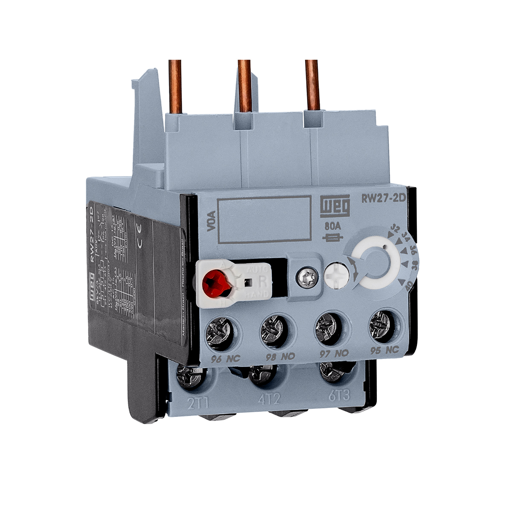

Componentes Elétricos
Disjuntor

→ Conceito: O disjuntor é um dispositivo de proteção elétrica, ele se "auto-desliga" automaticamente quando a corrente passa do limite seguro. Diferente de um fusível que faz a mesma função, porém quando queima precisa ser trocado, o disjuntor só precisa ser religado manualmente.
→ Aplicações: Ele pode servir para evitar incêndios, proteger fios e equipamentos e também desligar circuitos em curto-circuito ou sobrecarga.
Exemplo: Se ligar muitos aparelhos numa tomada e a corrente ficar alta demais, o disjuntor cai.
Contator

→ Conceito: É como um "interruptor elétrico automático", usado para ligar/desligar cargas grandes usando um sinal pequeno. (Ele faz parte de dois circuitos: o circuito de comando (a bobina) e o circuito de potência (contatos principais que ligam a carga)).
→ Aplicações: Muito usado para: motores, bombas, compressores e máquinas industriais.
Exemplo: Uma bobina cria um campo magnético que puxa contatos metálicos e fecha o circuito.
Botão de pulso (botoeira)

→ Conceito: Botão que só funciona enquanto está pressionado, possuindo dois tipos: NA (Normal aberto) e NF (Normal fechado).
→ Aplicações: Serve como botão START, botão STOP, campainha e etc.
Chave Manopla (Retenção)

→ Conceito: É uma chave que depois de ser girada permanece na mesma posição. Diferença da botoeira é que a botoeira volta sozinha, já a manopla, fica travada.
→ Aplicações: Ligar/desligar máquinas, seleção manual/automática.
Sensor fim de curso

→ Conceito: Sensor que detecta o limite de movimento de algo.
→ Aplicações: Elevadores, portões, máquinas industriais.
Exemplo: Quando um portão chega no final do trilho, o sensor detecta e manda para o motor.
Motor elétrico trifásico

→ Conceito: Motor muito usado na indústria. Funciona usando três fases elétricas (energia elétrica dividida em 3 sinais alternados) para criar um campo magnético girante. O campo magnético girante é criado pelo estator (a parte fixa), e ele induz a rotação no rotor.
Funcionamento simples: O campo magnético "puxa" o rotor (rotor é a parte do motor que gira) e faz ele girar.
→ Aplicações: Bombas, ventiladores, tornos, esteiras.
Vantagens: Forte, eficiente, resistente e de pouca manutenção.
Multímetro

→ Conceito: Aparelho usado para medir grandezas elétricas. Mede tensão (V), corrente (A), resistência (Ω) e continuidade.
→ Aplicações: Descobrir defeitos, testar componentes, verificar tensão.
Relé temporizador

→ Conceito: Relé que executa uma ação após um tempo configurado.
→ Aplicações: Automação industrial, partidas automáticas, controle de tempo.
Exemplo: Liga um motor 5 segundos depois que o botão é apertado.
Disjuntor motor

→ Conceito: É um disjuntor específico para proteção de motores elétricos. Protege contra: sobrecarga, curto-circuito, falta de fase. A diferença do disjuntor motor para um disjuntor comum é que ele é ajustado conforme a corrente do motor.
→ Aplicações: Proteção de motores trifásicos, bombas d'água, máquinas industriais em geral.
Relé térmico

→ Conceito: Protege motores contra sobrecarga usando aquecimento interno. Funcionamento simples: Se o motor puxar corrente demais por muito tempo, o relé aquece e desliga o circuito, mas não desliga instantaneamente, leva um tempo proporcional ao excesso da corrente.
→ Aplicações: Normalmente usado com contatores e motores trifásicos.